Why created: To understand accident frequency over time.
Insight: Accident counts fluctuate across years, showing inconsistent safety improvements.
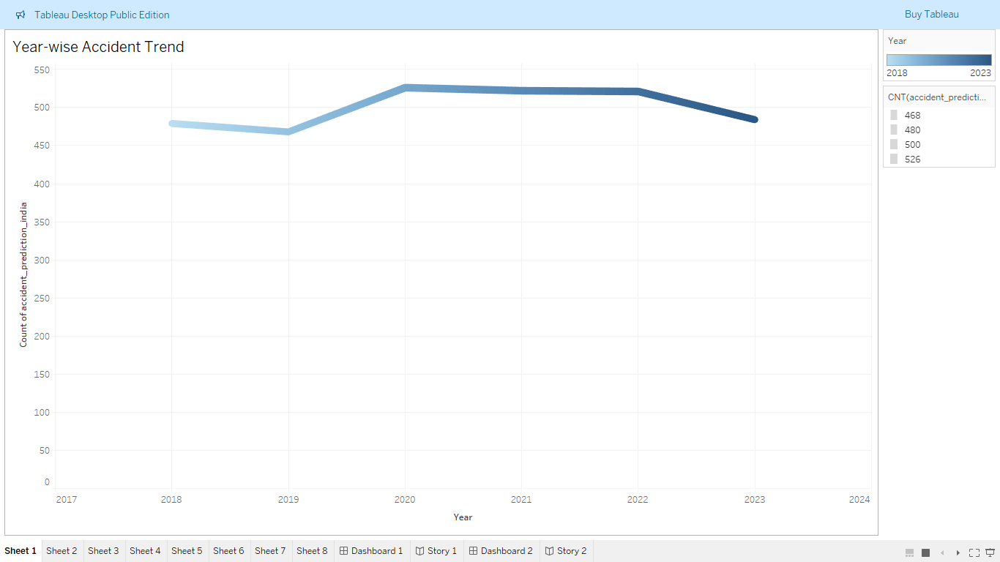
Interactive Data Visualization Portfolio
Road accidents are a major public safety concern in India, leading to many fatalities and injuries every year. Despite improvements in infrastructure and traffic regulations, accident rates remain high due to multiple factors such as time, location, vehicle type, and environmental conditions.
This project uses data visualization to identify accident patterns and uncover high-risk conditions contributing to severe accidents.
Accident frequency is calculated by counting the number of records.

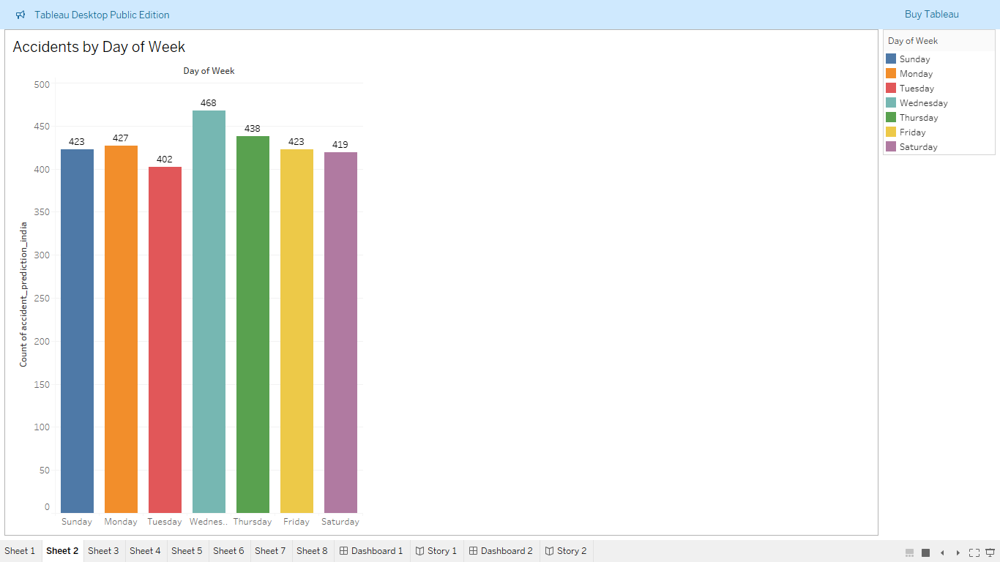
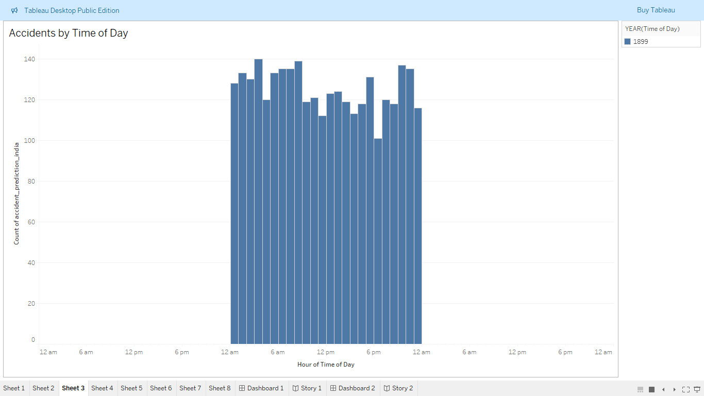
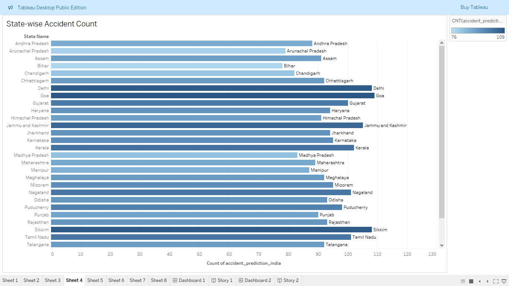
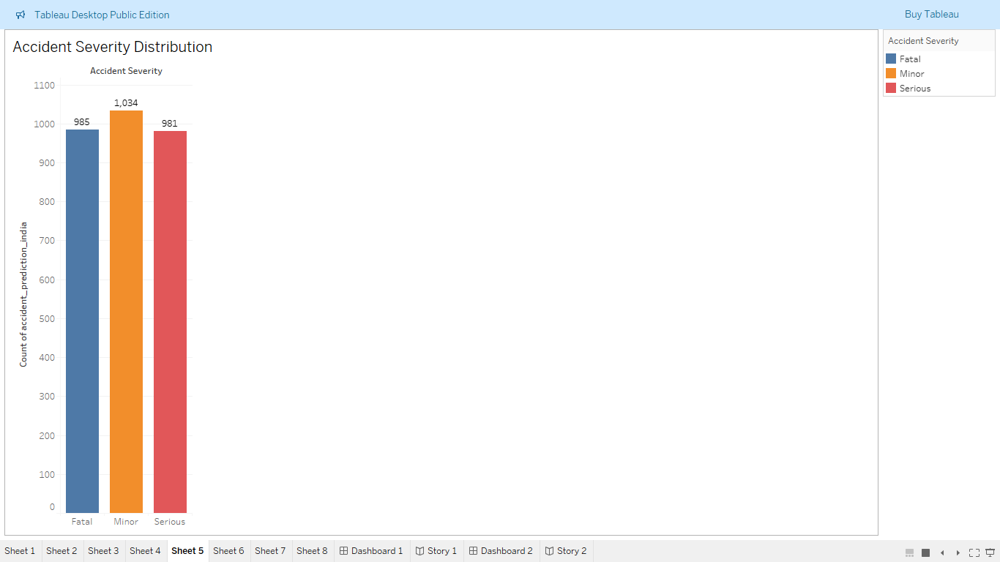
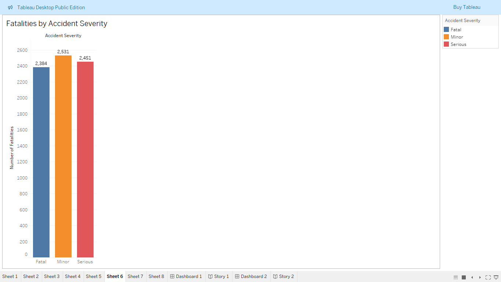
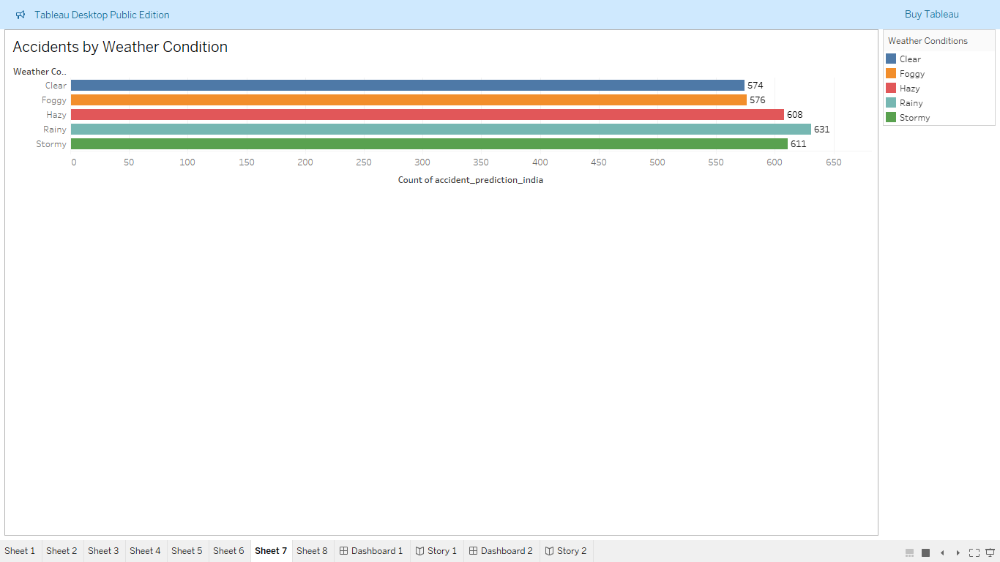
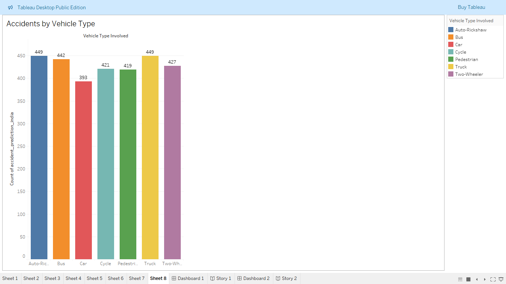
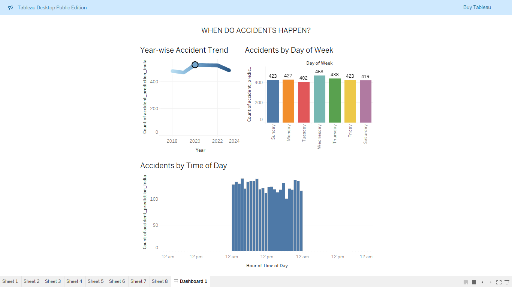
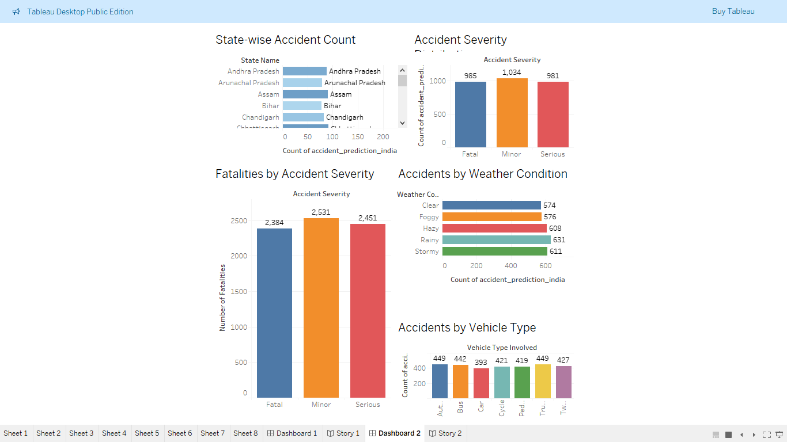
Accidents are not random. Few states and time periods contribute disproportionately to totals.
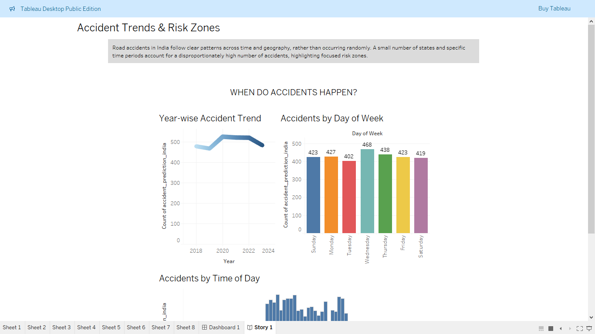
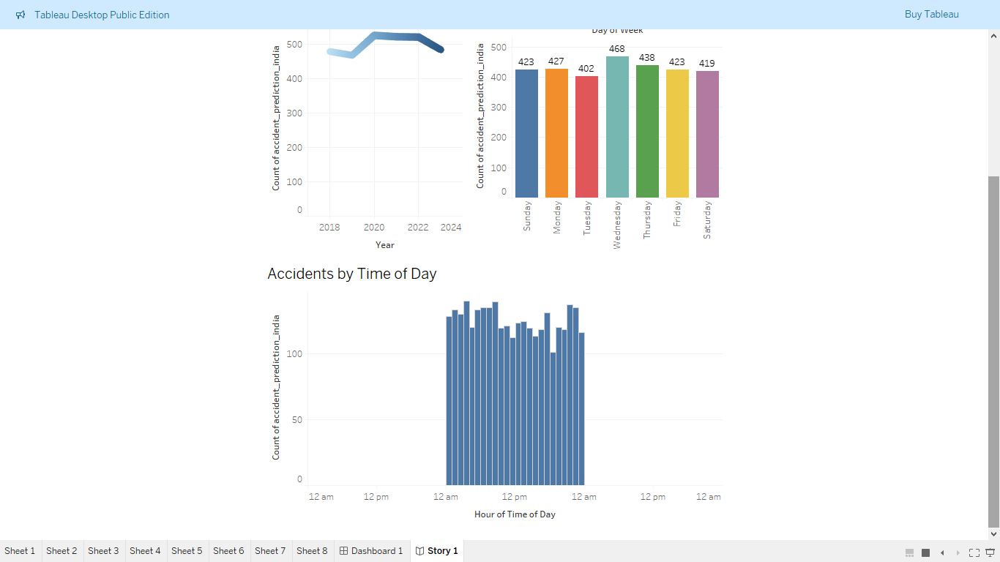
Most accidents are minor, but severe accidents cause majority of fatalities. Vehicle type and environment play a role.
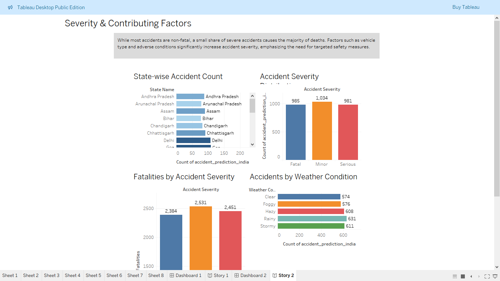
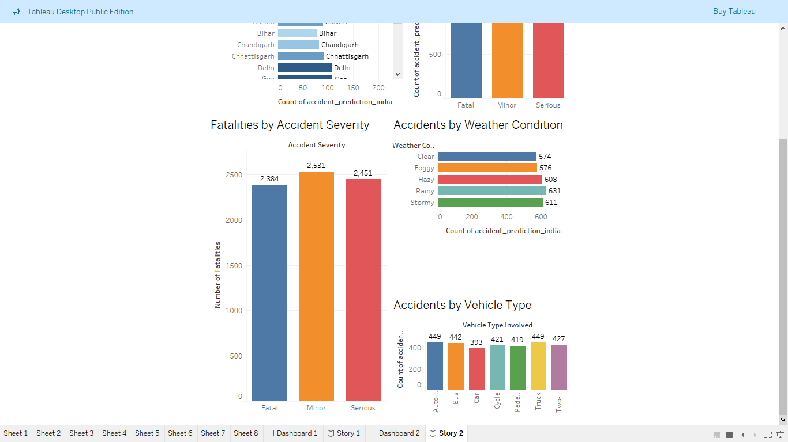